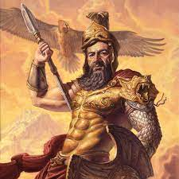

Ares
DIEU DE LA GUERRE, DE LA BRUTALITE ET DE LA DESTRUCTION
-
Nom romain : Mars
Etymologie : « Tueur »
Surnom : Fléau Des Hommes
Père : Zeus
Mère : Hera
-
Ares, le dieu de la guerre, était assez détesté et assez détestable. Sa grande passion étant la furie des combats,
la devastation et le sang, son nom ets symbole de "mort violente" et de "peste" Prometteur.
-
-
Arès est abhorré de tous, et même de ses parents, Zeus et Héra , dont il est pourtant le seul fils légitime.
Pas de bol. Cela le rendrait presque attendrissant, s’il n’était également lâche et couard. La seule à l‘aimer
est Aphrodithe , qui ne s‘intéresse qu'à sa beauté, à ses muscles et à ses armures étincelantes… Ensemble, ils ont
eu deux enfants, aussi détestables que papa, qui l‘accompagnent à la bataille : Deimos (« Terreur ») et Phobos (« Peur »)
-
Ares, étonnamment, a donné son nom à un tribunal athénien, l‘Aréopage. En effet, Arès avait tué le coupable du viol
de sa fille. Les dieux organisèrent alors le premier procès de l’histoire sur la colline face à l’Acropole, ou avait
eu lieu le meurtre, l’acquittèrent (à une voix près) et les Athéniens jugèrent désormais tous les homicides sur cette
éminence. Aujourd’hui le mot désigne encore une réunion de gens compétents et la plus haute instance de l’autorité judiciaire grecque !
-
Arès ne connaît ni la justice ni les lois (ou seulement celle de la guerre), mais c'est sans doute justement pour
cela qu'il est le dieu des serments ! En effet, qui un parjure pourrait-il davantage redouter que le dieu de la vengeance,
de la destruction et de la désolation ? C'est sûrement le raisonnement que tenaient les jeunes nommes sur le point de devenir
adultes à Athènes, les éphèbes, qui juraient d'aimer et de défendre la patrie en son nom.